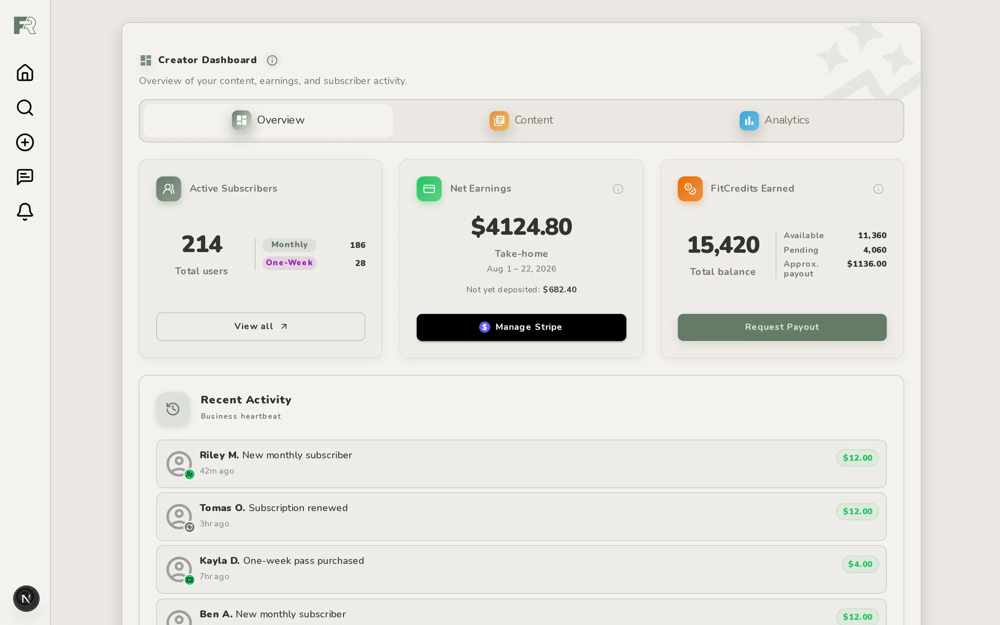
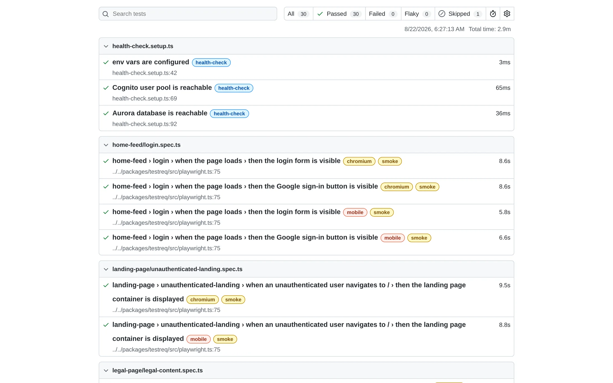
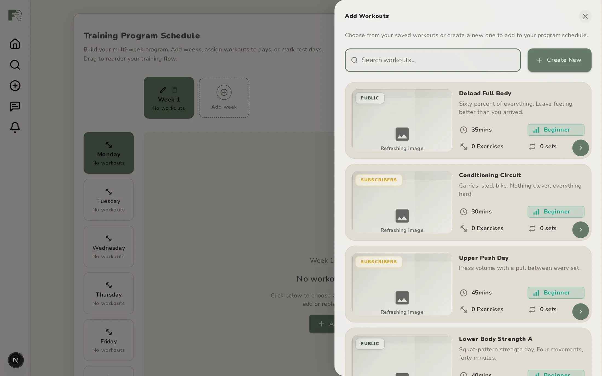

Route definitions, Zod schemas, entities and repositories live in one package that the backend, the web app and the CDK infrastructure all read from. An endpoint gets defined once and the types follow it everywhere. That's what kept 34 services from drifting apart.
An Express shim wraps the exact Lambda handlers and route definitions that ship to AWS, with Docker Postgres standing in for Aurora and MinIO for S3. There is no separate local implementation to drift out of sync.
Stripe subscriptions and creator payouts, the webhooks that reconcile them, and a FitCredits ledger for everything a subscription doesn't cover.
The admin app behind the closed alpha, the subscription-funnel analytics, comment moderation with ban write-enforcement, and a nightly sweep that marks missed days across every in-progress training program.
Our performance harness was reporting simulated Lighthouse numbers as if they were measurements. We'd been making decisions on them for months. The trace data was sitting in every report and getting overwritten on the next run, and once I pulled it back out, the change we had written off as a regression was a 27% improvement in Largest Contentful Paint. The page had been faster the whole time. What doubled was the model's multiplier.
The same pass turned up two live security problems nobody was looking for: bearer tokens getting written to logs on every request, and AWS credentials serialized into a header no service ever read.
The test platform
499 Playwright specs with 1,700 individually tagged assertions, and a documented rule for which of three tiers each one belongs in. A suite that size stops being useful the moment nobody can say which tests are supposed to block a merge.
I also moved the pull-request gate onto self-hosted runners to cut spend without slowing the loop down.

